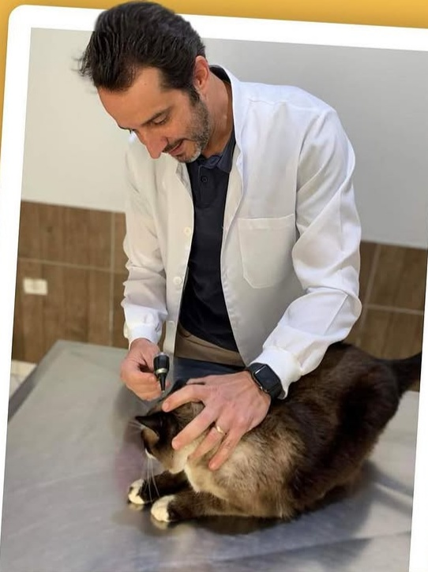
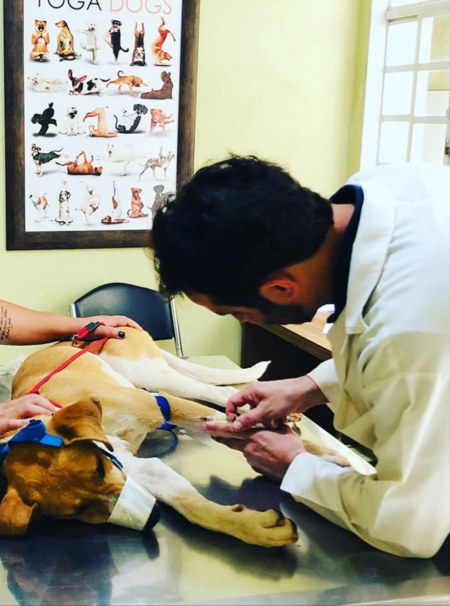
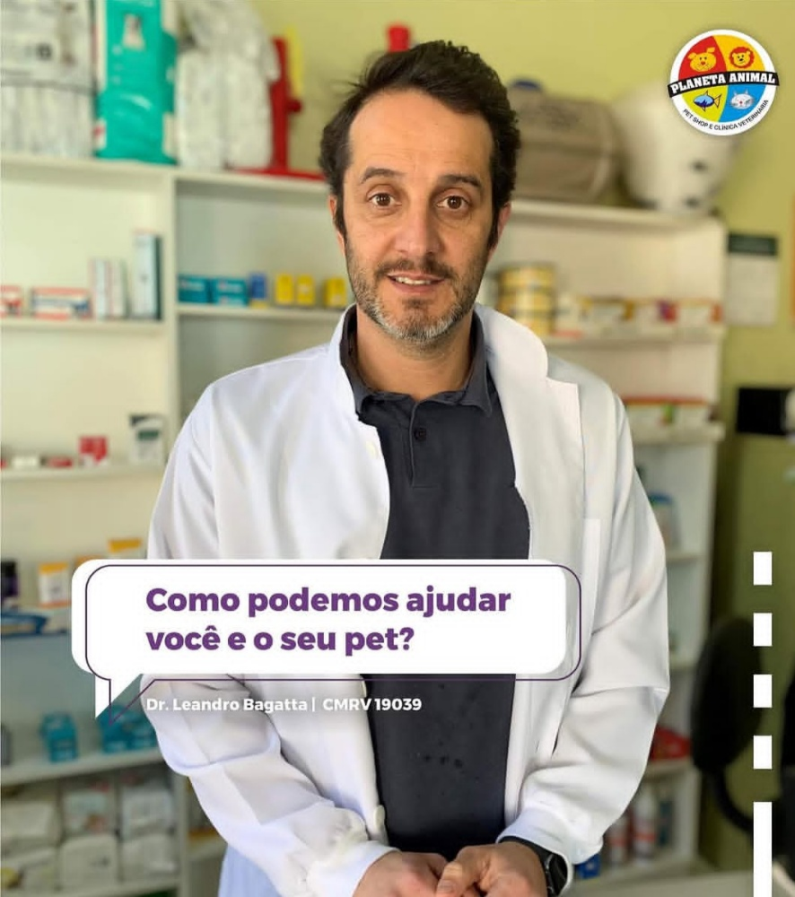

Nossos serviços
Oferecemos cuidado veterinário dedicado, procedimentos estéticos e atendimento domiciliar com a tradição de quem cuida da sua família há 21 anos.

Consultas veterinárias
Avaliação clínica geral, diagnóstico, orientações nutricionais e acompanhamento para cães e gatos em todas as fases da vida.
Agendar consultaBanho e tosa
Higienização profissional com produtos de qualidade, tosas higiênicas e tosas específicas para a raça do seu pet.
Agendar banho
Vacinação e imunização
Aplicação de vacinas nacionais e importadas para ajudar a manter a carteirinha de vacinação do seu pet atualizada.
Verificar carteirinha
Atendimento domiciliar
Visitas para consultas e orientações diretamente na residência, oferecendo conforto e reduzindo o estresse do animal.
Solicitar visita